Composite Captain America Shield
Solidworks | PartWorks 3D | VCarvePro | ShopBot PRSalpha
Completed as part of 4.140 (MIT Graduate-Level Class), November 2016
Designing the shield in Solidworks
This project involves composites - specifically burlap + epoxy for some tough almost plastic-y materials. It seems the composites projects that turn out the best are those that rely on smooth geometry and don't have super tight corners to force the burlap into. That made it relatively easy on me to determine a direction for this project, as there's something I've wanted to build for a long time. A Captain America shield seemed like the perfect thing to build because both its size and its geometry were well-suited to the fabrication process for composites
Since the shape of the shield is fundamentally a concave disk, I decided to challenge myself a little bit more with the software. I'm most comfortable making things in Autodesk Inventor or Fusion 360 so I decided to go out of my comfort zone and instead use Solidworks for this project. In addition, most of my projects in the past have been built off simple constructive geometry - draw a sketch, extrude it, sketch again, revolve or extrude, etc. I'd never done a project that involved complex surface modeling such as what would be required for a shield (to some degree) so this project was a good opportunity to dip my toes into the world of curved surface modeling.
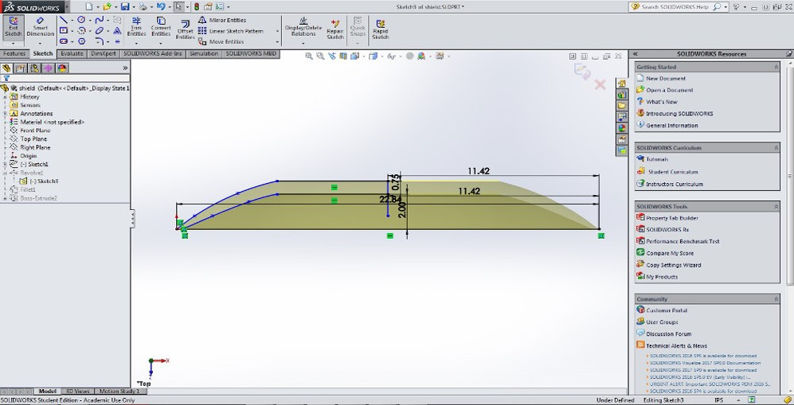I began in Solidworks by modeling a side profile of the shield. I'd never used Solidworks before on a 3D project (used it to design laser cutter cuts before) so getting settled into the environment and switching over from Autodesk Inventor took a little bit of time. Most of the function are basically identical but the representations are more pictographic in Solidworks I feel. The width of the foam insulation we were working with was only 24" wide on one side, so I was limited to a 24" diameter circle for the main part of the shield. To allow a little bit of additional space for cutting into the foam, I set up my shield with an internal diameter of only 22". The curvature on the outside is a spline that I adjusted to roughly be the shape I'd expect a shield to be.
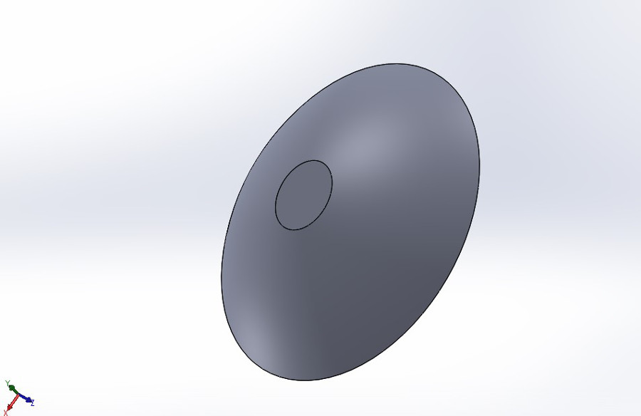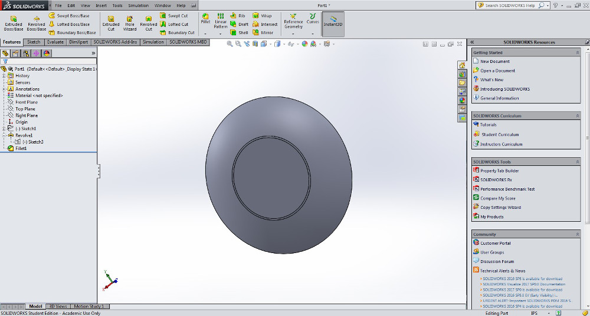
After doing a revolution about the center axis, I realized my initial sketch had the flat area in the center of the shield much too small. There's no room for a star! Fortunately, Solidworks makes it extremely easy to redimension a sketch even if there's a solid component revolved from it. I fixed the center area and made it about 50% the total diameter of the shield which, based on my observations of pictures of the actual shield, was about right.
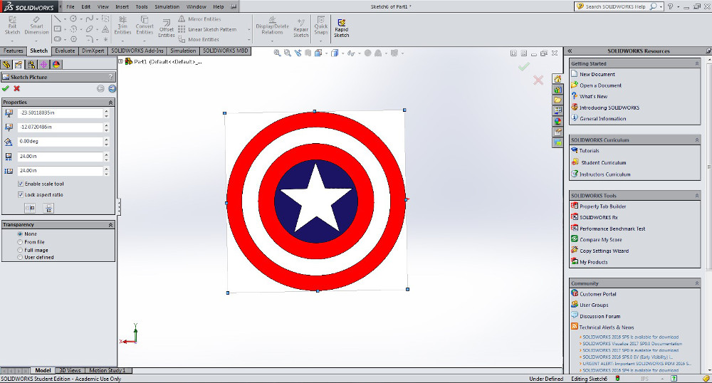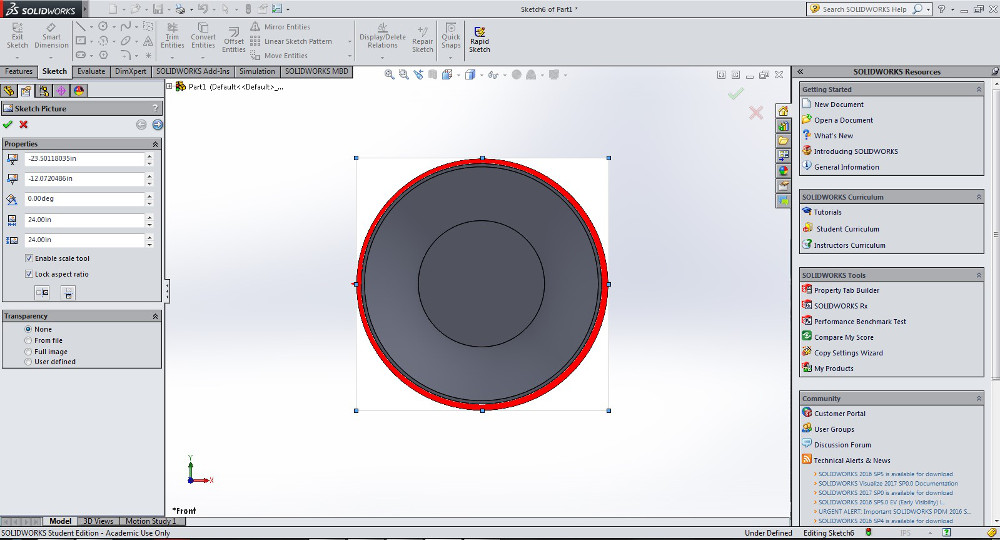
Solidworks includes the helpful feature of being able to import an image file into a sketch layer. In this case, I imported a flat color image of the Captain America shield and layered it on top of my initial revolution feature. There's another feature after importing an image called "auto-trace" - this feature takes areas of high contrast in an imported image and converts them to sketch lines recognized by Solidworks. I applied auto-trace to the star in the center of the shield after centering the shield properly and was rewarded with a sketch of the star feature on the plane on the front of the shield.
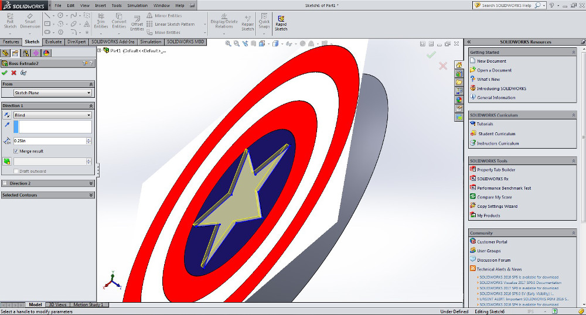From there, it was a simple matter of extruding the sketch just far enough to make the star feature visible on the shield. I chose a depth of .25" where the total shield depth was closer to 1.5 inches. This 1.75" total depth would be easy to do in the foam which only has a thickness of 2". I exported the image to STL format to prepare to cut.
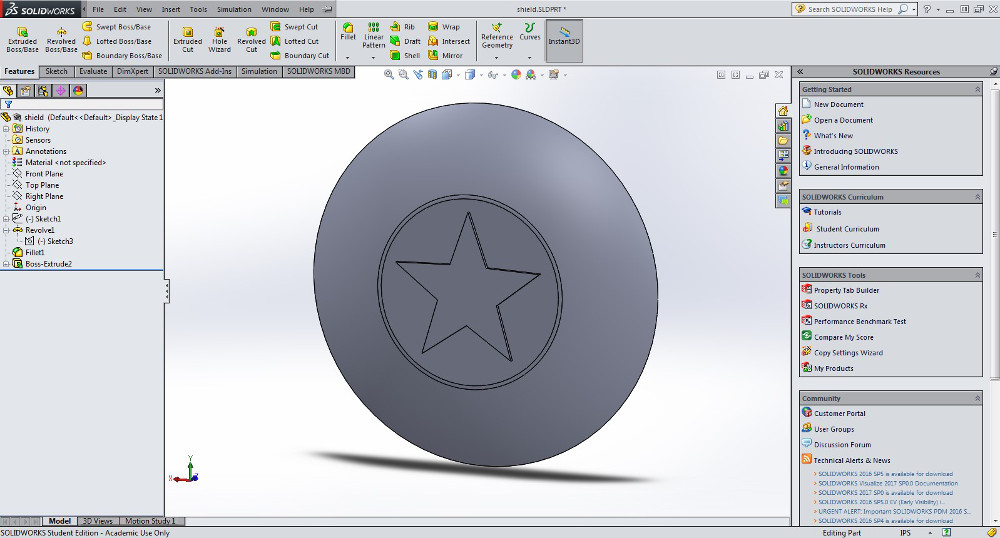Machining the foam shield
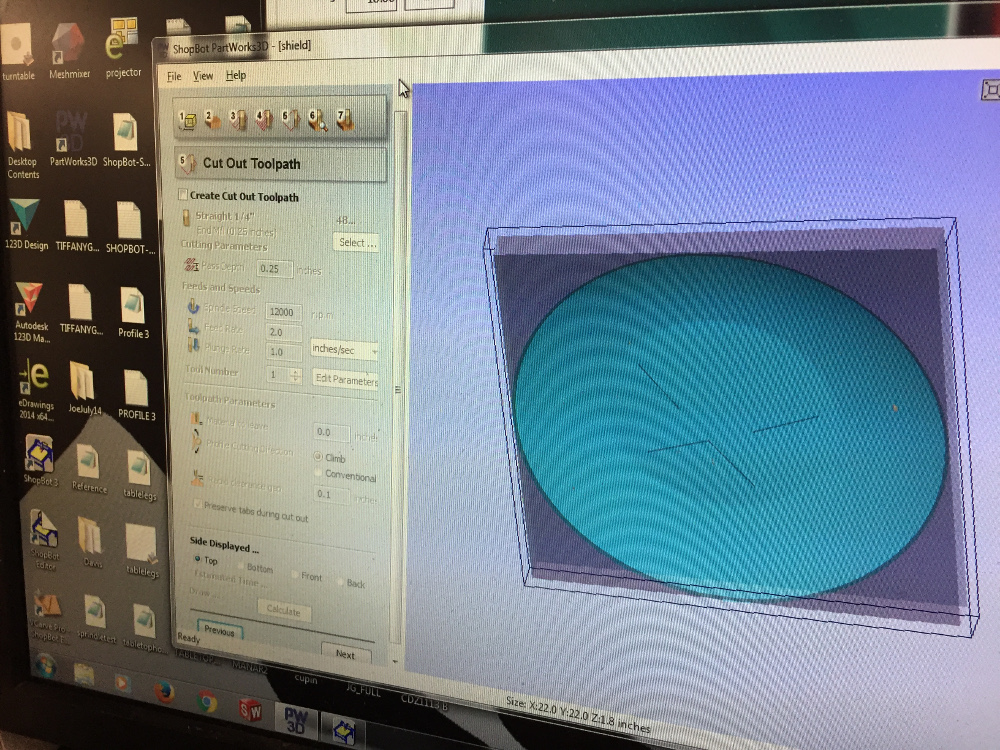I set up the shield in Partworks 3D and found out the total cut time was going to be just over an hour. I chose an 1/2" normal end mill because the total shield size was 22"x22"x1.8" and I wanted the job to go as quickly as possible. It was incredibly aesthetically appealing to watch the mill cut out the curved surface of the shield.
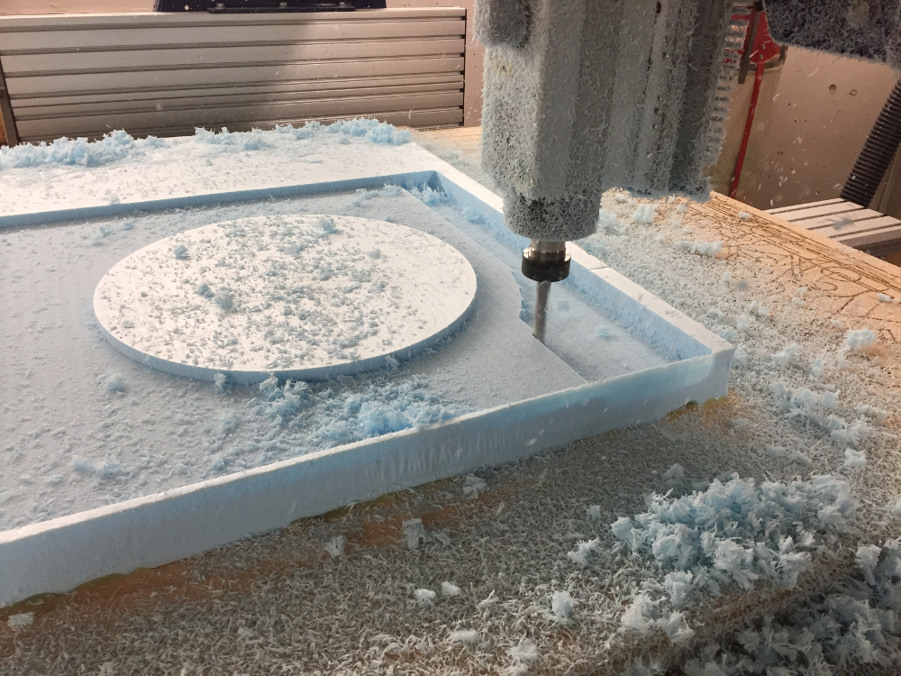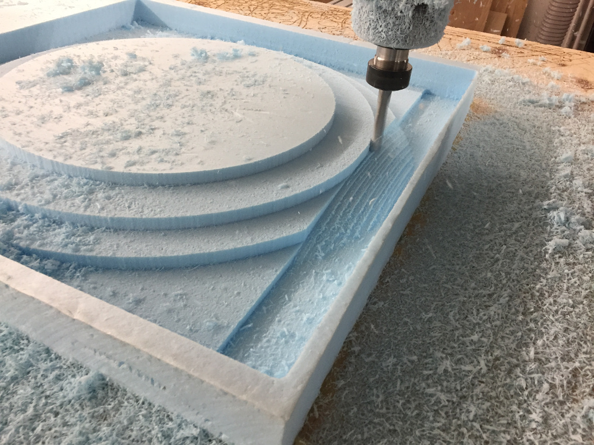
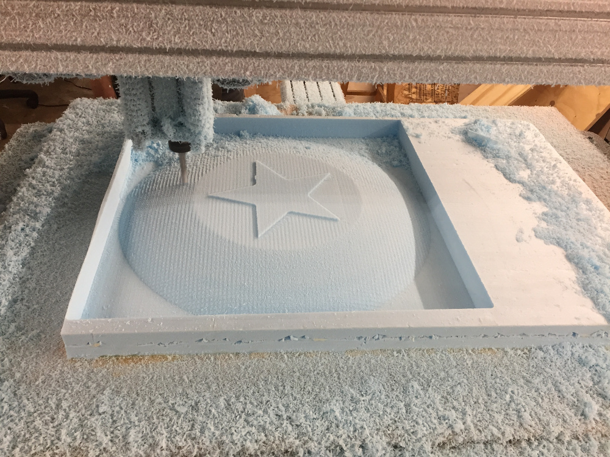
I took the finished foam shield and manually cut out the outline of the shield using an exacto-knife. The result was a sweet foam shield that I could use in case the whole composites thing didn't work out. Glenn advised me that the vacuum bag would treat the solid convex shape of the cut-out shield much better than it would the well if I left the shield as part of the bigger foam block.
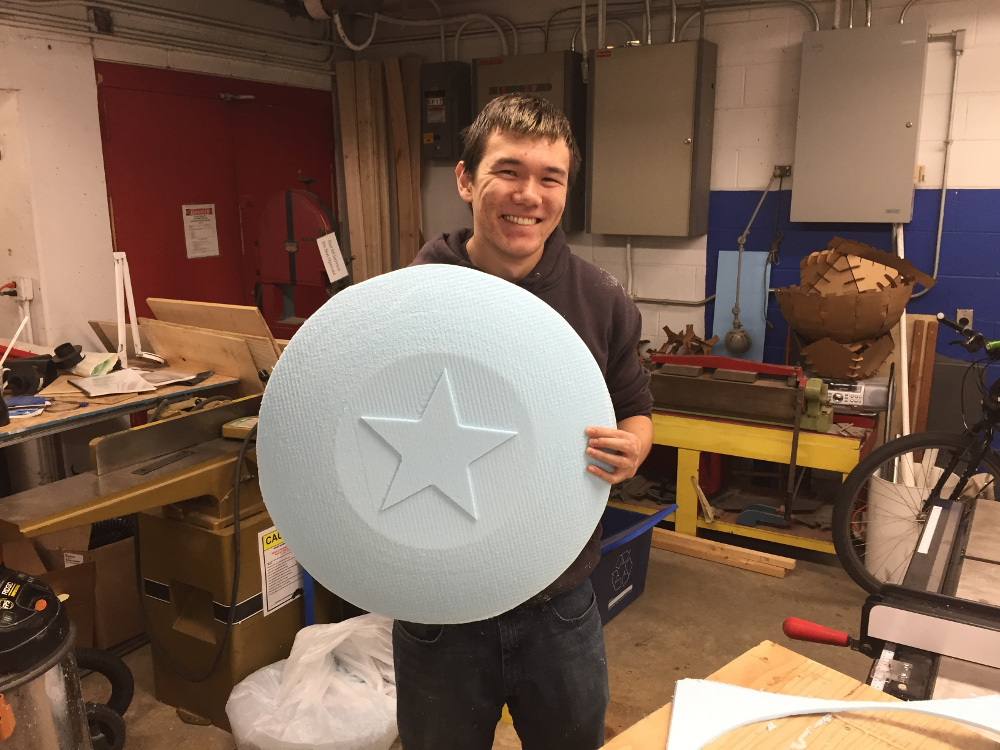From there, the process was extremely straightforward. I cut out 5 layers of burlap to be used in preparing the material. Since I'd only extruded the star to a depth of 0.25", it would not have shown up among all the layers of burlap so I decided instead to include some linen in the material as well.
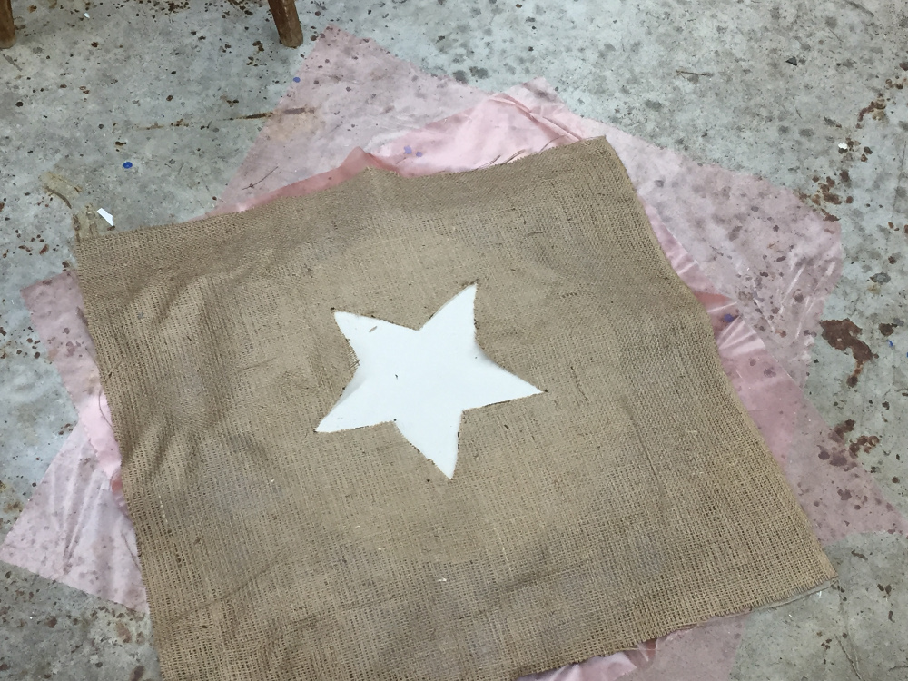I cut a star-shaped hole in the top layer of the burlap using a sharpie and scissors so that the linen material could show through. I layered the epoxy over the burlap, set the whole thing in a vacuum bag, sucked out all the air, and left it to dry overnight.
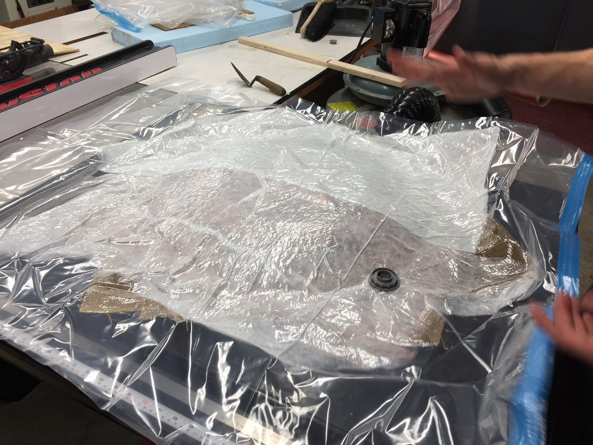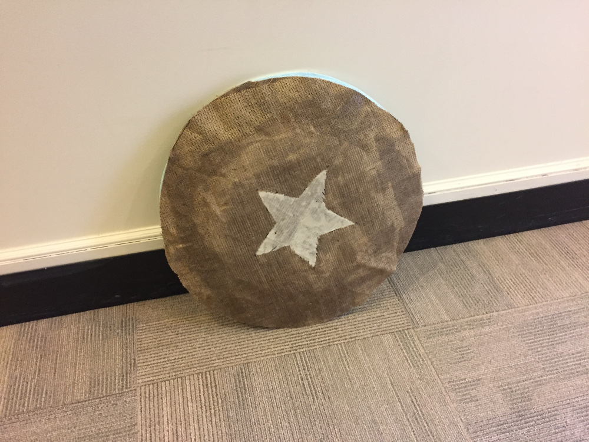
I could have probably used a little more epoxy as the edge regions of the shield were basically only burlap - turns out a thin layer is not enough and the best projects are the ones that you lather the epoxy on. The finished shield is pretty strong in the center region. A very successful composite build!